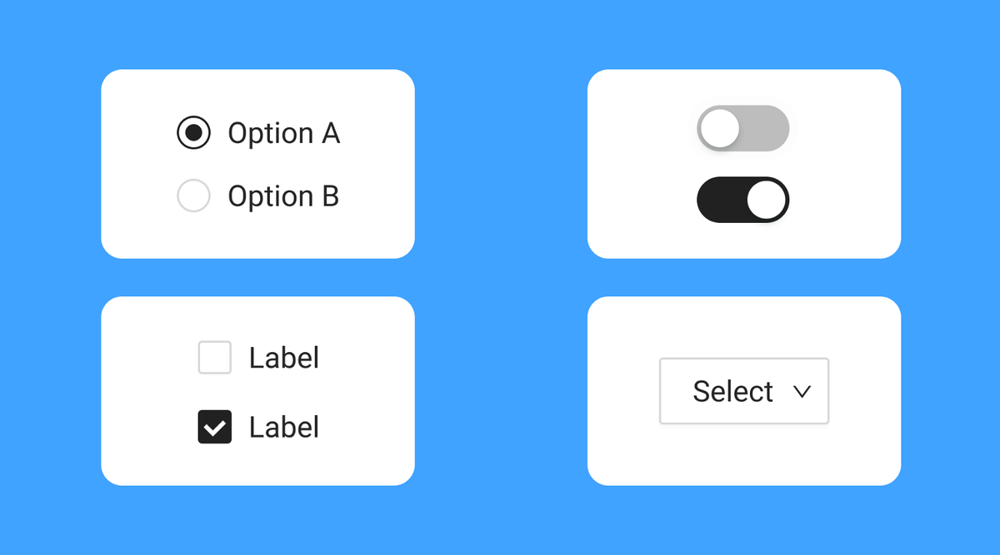

Introduction
In this lesson, you will discover how the role of an image affects the way alt text should be written.
You will not be given the rule right away. Instead, you will compare examples, notice patterns, test your ideas, and then apply what you discovered to new situations.
Objective: Given an image in context, you will identify the image role and predict the appropriate alt text behavior with at least 6 out of 9 correct responses.
Before You Begin
First, learn the four image roles used in this lesson.
You will use these ideas to discover a pattern in the next steps.
Informative
Adds meaning or useful information to the page.
Decorative
Only adds visual style and does not add meaning.
Functional
Triggers an action, such as a button or link.
Complex
Contains a lot of information, like a chart, graph, map, or diagram.
Puzzling Situation
Listen first, then compare the two examples below.
View transcript
Take a close look at these two examples. Both show scenic sunset visuals, but they do not need the same kind of alt text. Focus on what each image is doing on the page. One adds meaning. The other is only there for visual style.


These two images both show a scenic view, but they follow different alt text rules. Why?
Example Set 1


What changed between these two examples?
Think about whether the image adds meaning or only adds visual style.
Example Set 2
Pay attention to how the wording changes when the image role changes.
View transcript
Now compare a functional image and a complex image. One should tell the user what action will happen. The other should summarize the main point. Notice that neither one needs a description of every visible detail.

How is the better alt text different for the cart icon and the chart?
Track the Pattern
Fill in which kind of alt text behavior matches each image role.
State Your Hypothesis
Try to describe the rule in your own words before moving on.
View transcript
You have now seen several examples. Try to state the pattern in one or two sentences. Focus on the relationship between the role of the image and the kind of alt text it needs.
Based on the examples, what pattern do you think connects image role and alt text?
Check 1: Informative Image

Context: This image appears in an article about unusual ocean photography.
Check 2: Decorative Image
Context: This image is used only for visual styling next to a heading.
Check 3: Functional Image
Context: This icon opens the shopping cart.
Check 4: Complex Image
Context: This chart appears in a report about NVIDIA revenue growth across business segments.
Test the Pattern
Now test your idea with new situations.
View transcript
You have already compared examples and formed a hypothesis. Now apply that pattern to new situations. Ask yourself what the image is doing in context. If the role changes, the alt text behavior should change too.
In the next steps, try to use the same rule on unfamiliar examples instead of relying on memory from earlier screens.
Practice 1: Identify the Role

Context: This image appears in a report showing how enrollment changed over time.
Practice 2: Choose the Best Alt
Context: This image appears in a presentation about a planning proposal.
Final Challenge
Context: This image appears in a website header. Selecting it opens the contact form.
Lesson Complete
You have reached the end of the lesson.
When the role of an image changes, the alt text behavior should change.
The image role is the cause. The alt text decision is the result.
Informative
Describe the meaning.
Decorative
Use empty alt text.
Functional
Describe the action or purpose.
Complex
Summarize the main point.